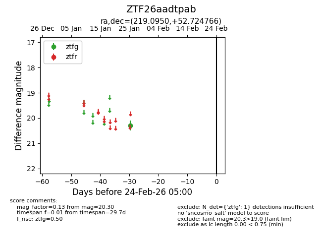
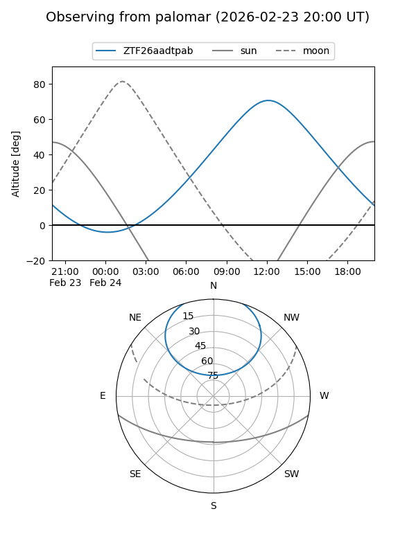

ZTF26aadtpab
Target ZTF26aadtpab at 2026-01-25 13:11
Aliases and brokers:
FINK: link
Lasair: link
ALeRCE: link
alt names
ZTF26aadtpab (ztf,fink_ztf)
Coordinates:
equatorial (ra, dec) = 219.0950,+52.72477
equatorial (HMS+DMS) = 14:36:22.81,+52:43:29.16
galactic (l, b) = (92.7573,+57.81488)
Flags:
Photometry:
last ztfg=20.30
1 ztfg detections
Lightcurve

Visibility


Additional plots